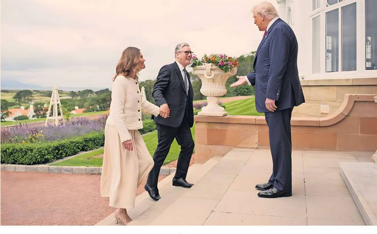

Jitters in Paris and Berlin • Big drop for euro • Carmakers shares fall • 20% US levy on rest of world
FT Reporters
Germany and France yesterday hit out at the EU’s long-awaited trade deal with the US, warning that it would wound the European economy as the euro slid against the dollar.
German Chancellor Friedrich Merz said the agreement concluded with US President Donald Trump the day before would cause “considerable damage” to his country, Europe and the US itself. “Not only will there be a higher inflation rate, but it will also affect transatlantic trade overall,” Merz said, in a striking rebuke of the deal negotiated by European Commission President Ursula von der Leyen.
The euro was down more than 1 per cent against the dollar and fell 0.8 per cent against the pound, following the announcement on Sunday that the US would impose 15 per cent tariffs on most imports from the EU.
“This result cannot satisfy us,” Merz added. “But it was the best result achievable in a given situation.”
French Prime Minister Francois Bayrou said the deal marked a “dark day,” adding that the EU had “resigned itself into submission.”
The agreement, hailed by Von der Leyen as “the biggest trade deal ever” and covering nearly 44 per cent of global GDP, averted a possible transatlantic trade war. It secured a lower tariff rate for the EU than the 30 per cent that Trump had threatened to impose from August 1. But the duties still mark a threefold increase from the average tariffs imposed on the bloc by the US before Trump’s “liberation day” announcements in April.
Germany's Dax closed 1.1 per cent lower yesterday while France’s Cac 40 gave up 0.4 per cent and tariff-exposed car industry stocks on the region-wide Stoxx Europe 600 fell 1.8 per cent.
While the euro fell yesterday, it remains 12 per cent higher against the dollar for the year, boosted by Germany’s defence spending plans as well as broader investor hopes that Trump’s America First policies will encourage a wave of economic stimulus in the EU.
The bloc’s steel producers’ industry body said a 15 per cent tariff on most exports would add a “huge burden” on its members.
The US Chamber of Commerce in the EU said the deal “provides relief” to businesses. But it added that the 15 per cent tariff rate “still marks a significant increase in the cost of trading” and that more sectors should be included in the agreement's zero-for-zero tariffs list.
The White House said the deal “achieves historic structural reforms and strategic commitments that will benefit American industry, workers and national security for generations.”
As Europe's leaders reacted, Spanish premier Pedro Sanchez said he supported it “without enthusiasm.”
French and German far-right parties said the deal exposed EU weakness. Alice Weidel, co-leader of Alternative for Germany, said it was “not an agreement but a slap in the face to European consumers and producers!”
Reactions came as Trump and UK premier Sir Keir Starmer met at the US president's Turnberry golf club in Scotland to discuss Britain’s trade deal with the US, and wars in Ukraine and Gaza.
Trump said he planned to set a tariff of up to 20 per cent “for essentially the rest of the world,” referring to nations that have not struck agreements with the US. He would unveil pharmaceuticals tariffs “in the near future.”
Reporting by Aime Williams in Washington, Alice Hancock in Brussels, Anne-Sylvaine Chassany in Berlin, Simeon Kerr in Turnberry, Ian Smith and Emily Herbert in London and Leila Abboud in Paris
Trade reports & analysis page 2 | Day in markets page 9 | Arno Antlitz page 15